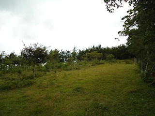
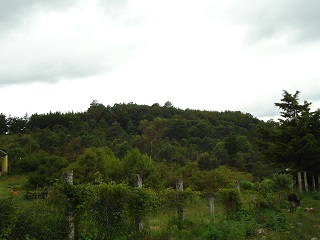
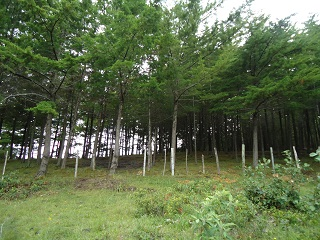
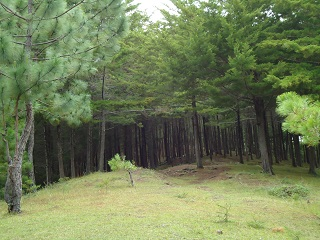
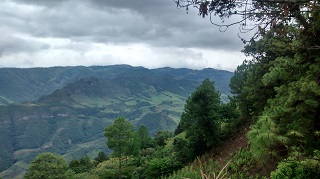

Es un lugar construido por alumnos del cobach 47, de pueblo nuevo, al cual se comenzó a reforestar en los inicios del plantel. Cuenta con una extensión de aproximadamente 3 hectáreas. Está formado por arboles de ciprés y ocote en toda la extensión.
En el lugar se pueden observa vistas panorámicas del municipio, además de observación de paisajes en los alrededores, tanto como disfrutar de una puesta de sol.
Desafortunadamente debido al mal uso que muchos le dan, se observa en el lugar mucha basura, que dejan quienes llegan al lugar a convivir.
Se encuentra en la afueras de la cabecera municipal de pueblo nuevo Solistahuacan.
Estando en el centro, tomando como referencia el parque, se dirige con dirección al cobach 47, que está en el barrio san Anastasio, llegando al lugar se desvía al camino con dirección a la comunidad el estoraque aproximadamente 300 metros y se verá una brecha a la izquierda, entre 2 potreros cercanos, seguir el camino aproximadamente 500 metros, y se llega a un alambrado que es donde comienza el lugar.
En el lugar usted puede practicar actividades como:





posicione el mouse o de click sobre las imágenes
{kind=link}
{kind=link}
{kind=link}
{kind=link}
{kind=link}